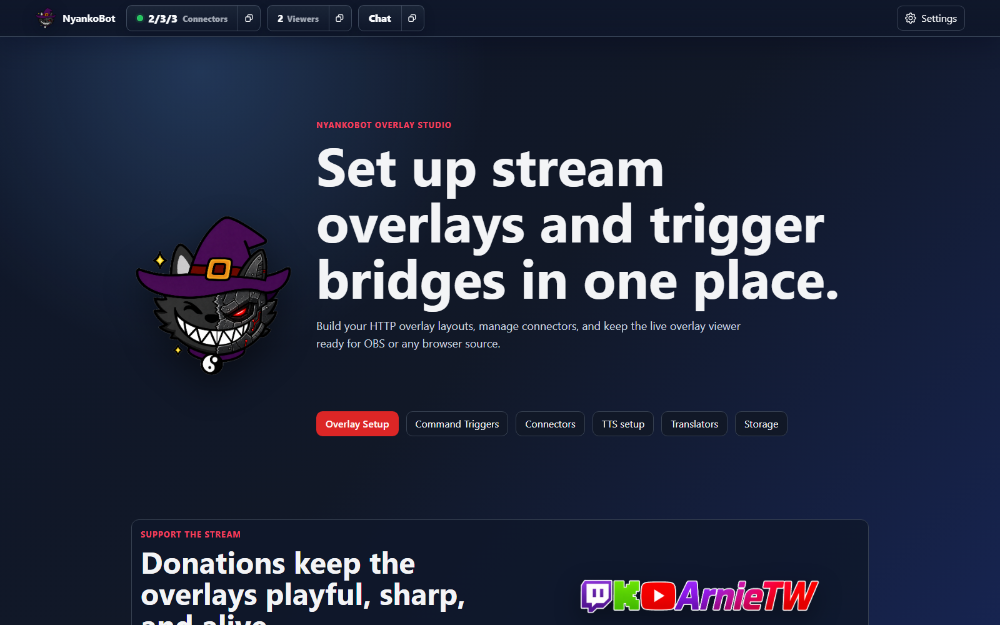

Documentation
NyankoBot User Guide
This documentation covers installation and the main setup workflows: overlays, connectors, stream status, chat, rewards, command triggers, reusable sources, TTS, and settings.
Download & Install
Install NyankoBot and find the local setup page.
Quick Setup
Connect a platform, create one OBS overlay, then add text and media boxes inside it.
Overlay Setup
Create one full-scene OBS overlay with multiple triggered boxes inside it.
Streamer.bot Connector
Bridge existing Streamer.bot workflows into NyankoBot's connector model.
Connectors
Manage Streamer.bot, Twitch, and Kick connector instances and connection state.
Stream Status
Update Twitch and Kick stream titles, categories, and supported tags from Setup Home.
Command Triggers
Create NyankoBot triggers, cooldowns, connector event bindings, and action flows.
Platform Events
Choose Twitch, Kick, OBS, Streamer.bot, and NyankoBot events for triggers.
Action Reference
Find chat, variable, language, overlay, web, and connector actions.
Channel Rewards
Define shared rewards and map them to Twitch or Kick connector reward settings.
Chat
Monitor messages coming from connected chat-capable connectors.
TTS Setup
Add CosyVoice, Kokoro, or Google TTS, test voices, and manage local model settings.
Translators
Configure Google or local translation providers for trigger actions that translate and store text.
Storage
Audit reusable sources, preview media, and inspect or edit variables.
KLIPY Media
Search and add remote GIFs, stickers, clips, and memes to binding items.
Variables
Define arguments and persistent values, then inspect defaults and trigger usage.
User Groups
Organize viewers across platforms and manage the Ignore group.
Settings
Configure app behavior, user groups, category bindings, variables, updates, and logs.
Components
Read UI references for the Overlay, Box, Binding editor, source controls, IF/Else, and Argument Control.
Examples
Build common overlays such as chat text, media commands, and TTS responses.
Setup Home
The setup home is the starting point for overlay editing, connector status, command triggers, chat, TTS providers, translators, storage, and app settings.

Download & InstallUse first. It explains where the release comes from, how to launch the app, and how to reach Setup Home.Quick SetupUse after install. It walks through the first Streamer.bot bridge, OBS overlay, text box, and media box.Setup PagesUse for Overlay Setup, Connectors, Stream Status, Command Triggers, Channel Rewards, Chat, TTS Setup, Translators, Storage, or Settings.ComponentsUse when you need detailed explanations of a specific UI component or dialog.ExamplesUse when you want a recipe for a specific overlay behavior.TroubleshootingUse when something fails to connect, render, trigger, play, or synthesize.